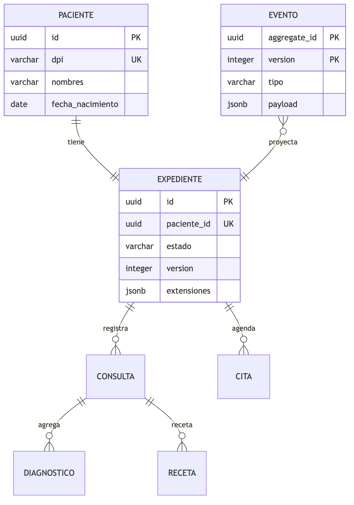
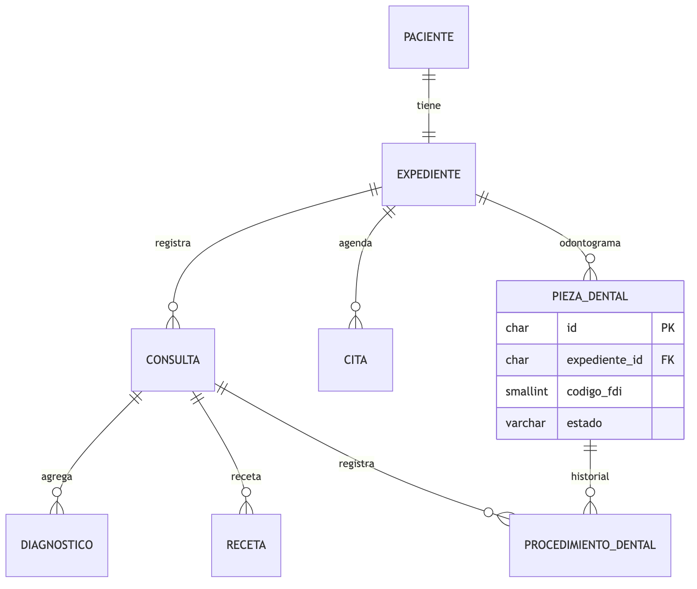
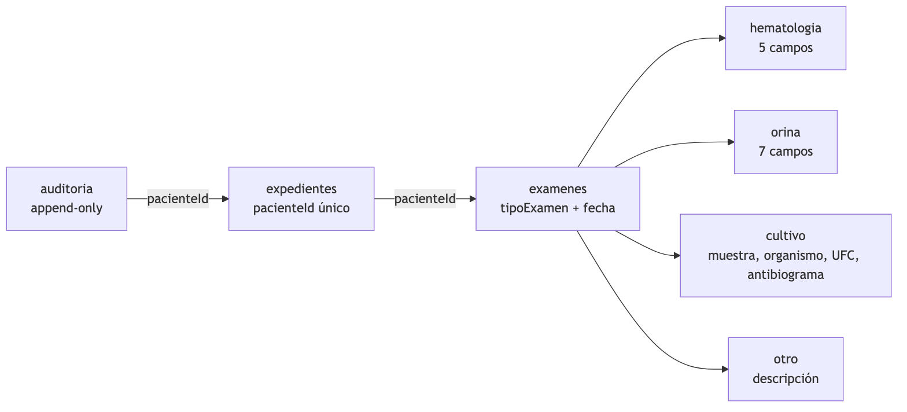
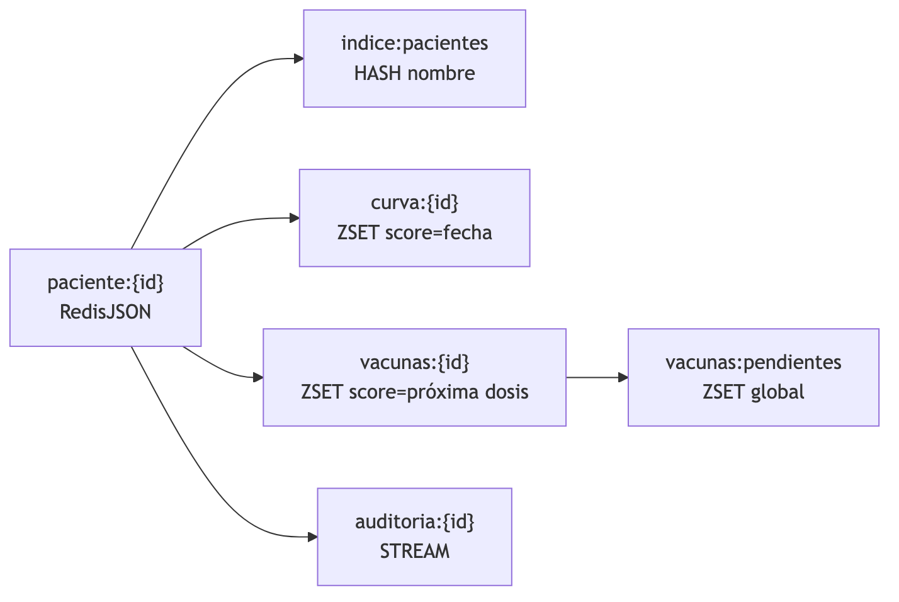

Universidad Rafael Landívar
Facultad de Ingeniería · Ingeniería en Informática y Sistemas
Bases de Datos II
Plataforma de historiales clínicos para cuatro instituciones independientes. La misma
lógica de negocio corre sobre cuatro motores distintos; el JWT decide a cuál se enruta
cada operación.
| Institución | Motor | Rol del motor |
|---|---|---|
| Hospital general | PostgreSQL | Event store + read model, integridad transaccional fuerte |
| Clínica odontológica | MySQL | CRUD InnoDB, operabilidad y hosting gestionado |
| Laboratorio clínico | MongoDB | Resultados con estructura variable por tipo de examen |
| Centro pediátrico | Redis | Sistema de registro (RedisJSON + ZSET), no caché |
Cómo leer este documento. Las secciones técnicas (modelado, consistencia, seguridad,
evidencia) están completas y enlazan al código. Las secciones marcadas
«Redacción del estudiante» son las que decide y escribe el estudiante; el agente
dejó la estructura, los hechos verificables y la evidencia, pero no redactó la
justificación en su lugar.
if por motor en los casos de uso.Kafka, gRPC, microservicios, sagas, Firebase, Kubernetes. Redis Streams se evaluó en la
fase 5 y se descartó para el proyector del Hospital (decisión A: proyector síncrono).
La restricción del enunciado exige un motor distinto por institución y al menos cuatro
motores. La asignación implementada es:
| Institución | Motor | Hecho técnico verificable |
|---|---|---|
| Hospital general | PostgreSQL | Event store clinico.eventos con UNIQUE(aggregate_id, version), read model 3NF, btree_gist para citas sin solape |
| Clínica odontológica | MySQL | InnoDB utf8mb4, SELECT ... FOR UPDATE para reservar citas, odontograma en pieza_dental |
| Laboratorio clínico | MongoDB | Colección examenes referenciada, $jsonSchema por tipo, índice { pacienteId: 1, fecha: -1 } |
| Centro pediátrico | Redis | RedisJSON paciente:{id}, ZSET curva:{id} y vacunas:pendientes, Lua para atomicidad |
> Pendiente. El estudiante redacta aquí por qué cada institución encaja con su motor
> a partir del volumen, la estructura de la información y la necesidad de transacciones
> estrictas. Los hechos técnicos de la tabla anterior son la evidencia disponible.
Preguntas que la justificación debería responder:
Event store append-only y read model normalizado en el esquema clinico. El agregado
Expediente se reconstruye desde clinico.eventos; el read model se escribe en la misma
transacción (decisión A de la fase 5).

UNIQUE(aggregate_id, version) es la concurrencia optimista.citas_sin_solape usa EXCLUDE USING gist (medico_id WITH =, tstzrange(inicio, fin) WITH &&).UPDATE destructivo del historial.CRUD directo en InnoDB. El odontograma es una tabla por pieza FDI y un historial de
procedimientos; la reserva de cita bloquea al médico con SELECT ... FOR UPDATE.

chk_pieza_fdi valida cuadrante 1–4 y posición 1–8 (no el rango ingenuo 11–48).auditoria_acceso es append-only por privilegios: el usuario de app no tiene UPDATE ni DELETE sobre ella.
El expediente es un documento; los exámenes van en una colección aparte y se referencian
por pacienteId. Un paciente acumula cientos de exámenes y casi nunca se leen todos
juntos; embeberlos choca con el límite de 16 MB de BSON.

$jsonSchema con oneOf por tipo y validationLevel: moderate.{ pacienteId: 1, fecha: -1 }.{ antibiotico, sensibilidad: S|I|R }.Redis es el sistema de registro, no una caché. Persistencia AOF appendfsync everysec +
RDB; la caché transversal vive en otra instancia (DB lógica separada por proceso).

paciente:{id}.ZRANGEBYSCORE vacunas:pendientes -inf hoy devuelve las dosis vencidas en una operación.08-limitaciones.md).guardar() por motor| Motor | Estrategia | Archivo |
|---|---|---|
| PostgreSQL | INSERT de eventos nuevos; UNIQUE(aggregate_id, version) rechaza la versión repetida | postgres-expediente.repository.ts |
| MySQL | UPDATE dentro de transacción InnoDB; SELECT ... FOR UPDATE sobre la fila del expediente y del médico | mysql-expediente.repository.ts |
| MongoDB | replaceOne con version en el filtro (concurrencia optimista sobre el documento) | mongo-expediente.repository.ts |
| Redis | Script Lua para read-modify-write atómico del JSON y los ZSET | redis-expediente.repository.ts |
La suite de contrato ejecuta el mismo escenario contra los cuatro adaptadores y verifica
que la segunda escritura sobre la misma versión lanza ConflictoDeConcurrencia:
contrato-repositorio.contrato.spec.ts.
El read model se actualiza en la misma transacción que el event store. No hay
consumidor de Redis Streams; el XADD se eliminó para que el código y el diseño digan lo
mismo. Consecuencias:
proyección.
clinico.eventos con pnpm hospital:reproyectar (scripts/hospital-reproyectar.sh).
antes de reproyectar.
guardar() abre BEGIN/COMMIT; la exclusión de citas y launicidad de eventos son constraints de la base, no lógica de aplicación.
REPEATABLE READ (default de InnoDB) y SELECT ... FOR UPDATE para la filadel expediente y la del médico al reservar una cita.
version evita pisar una escritura concurrente.
escritura separadas desde el cliente.
| Motor | Trade-off |
|---|---|
| PostgreSQL | El event store crece sin límite; no hay snapshots en esta entrega |
| MySQL | La simplicidad CRUD es deliberada; no hay historial de eventos |
| MongoDB | Las transacciones requieren replica set (configurado en Compose) |
| Redis | AOF everysec puede perder hasta ~1 s de escrituras ante un crash del proceso |
| Nivel | Ejemplos | Tratamiento |
|---|---|---|
| Público | Nombre de la institución, especialidades, horarios | Sin restricción |
| Confidencial | Nombre del paciente, teléfono, dirección, DPI | DPI enmascarado por defecto en la UI; no se escribe en logs |
| Restringido | Diagnósticos, resultados de laboratorio, datos de menores, VIH, salud mental | Toda lectura queda auditada; nunca se escribe en logs |
La UI muestra EtiquetaClasificacion en las secciones restringidas y una insignia
«Menor de edad» cuando corresponde. El DPI usa DatoProtegido con botón mostrar/ocultar.
Revelar el DPI no genera auditoría: es confidencial, no restringido (decisión 2 de la
fase 3).
| Motor | Usuario de app | Privilegios | Verificación |
|---|---|---|---|
| PostgreSQL | hospital_app | SELECT/INSERT/UPDATE en clinico.*; UPDATE/DELETE/TRUNCATE revocados en auditoria_acceso y eventos | pnpm verificar:privilegios |
| MySQL | odontologia_app | SELECT/INSERT en toda la base; UPDATE tabla por tabla; sin DELETE ni DDL | pnpm verificar:privilegios |
| MongoDB | laboratorio_app | readWrite solo sobre laboratorio; sin dbAdmin ni root | pnpm verificar:privilegios |
| Redis | pediatrico_app | +@all -@dangerous; FLUSHALL, CONFIG y KEYS denegados | pnpm verificar:privilegios |
Evidencia local:
==> PostgreSQL · hospital_app
✓ auditoría append-only: UPDATE denegado
✓ auditoría append-only: DELETE denegado
==> MySQL · odontologia_app
✓ auditoría append-only: UPDATE denegado
✓ auditoría append-only: DELETE denegado
==> MongoDB · laboratorio_app
✓ rol readWrite limitado a su base (sin dbAdmin ni root)
==> Redis · pediatrico_app
✓ FLUSHALL denegado por ACL
✓ CONFIG denegado por ACL
privilegios: mínimo por institución verificadoAuditLog y puerto de lectura ConsultaDeAuditoria (decisión 1 de la fase 3: puerto nuevo, separado como ExpedienteQueryService).
GET /pacientes/:pacienteId/auditoria devuelve solo metadatos: actor, acción,recurso y fecha. Nunca el payload clínico.
dato clínico restringido.
Logger y falla si una llamada interpola campos restringidos:.env e infra/mongo/keyfile están ignoradospor git.
| Dato | Decisión | Razón técnica |
|---|---|---|
| Expediente, consultas, diagnósticos, recetas, citas, mediciones, vacunas, piezas | Embebido en el documento expedientes | Se leen juntos al abrir el expediente y son un conjunto acotado |
| Resultados de examen | Referenciados en la colección examenes | Un paciente acumula cientos; embeberlos choca con el límite de 16 MB de BSON y casi nunca se leen todos juntos |
| Antibiograma | Embebido dentro del resultado de cultivo | Es pequeño y se lee siempre con el cultivo; se modela como arreglo de { antibiotico, sensibilidad } |
| Auditoría | Colección aparte auditoria | Append-only, no forma parte del agregado clínico |
Índice mínimo: { pacienteId: 1, fecha: -1 }. Validación por tipo con $jsonSchema y
validationLevel: moderate para no invalidar documentos viejos al endurecer el esquema.
| Dato | Estructura | Razón técnica | |
|---|---|---|---|
| Expediente | RedisJSON paciente:{id} | Acceso siempre por clave conocida; lectura completa en una operación | |
| Curva de crecimiento | ZSET curva:{id} con score = fecha | Orden cronológico y rangos por fecha sin ordenar en la aplicación | |
| Esquema de vacunación | ZSET vacunas:{id} con score = próxima dosis | ZRANGEBYSCORE devuelve dosis vencidas | |
| Dosis pendientes globales | ZSET vacunas:pendientes con member `pacienteId | codigo` | Una sola operación para todas las dosis vencidas |
| Índice de búsqueda | HASH indice:pacientes | Búsqueda por nombre sin consultas ad-hoc nativas | |
| Auditoría | STREAM auditoria:{id} | Append-only y lectura por rango |
> Pendiente. El estudiante redacta aquí el criterio explícito de embeber vs referenciar
> y lo conecta con el volumen, la frecuencia de lectura y los límites del motor. Los
> hechos técnicos de las tablas anteriores son la evidencia disponible.
> Redacción del estudiante — 3.3. Esta sección la escribe el estudiante. El agente
> dejó la tabla vacía y la evidencia que puede sustentar cada hallazgo.
| # | Hallazgo | Motor(es) | Evidencia |
|---|---|---|---|
| 1 | |||
| 2 | |||
| 3 | |||
| 4 |
Evidencia disponible para citar:
docs/entrega-2/evidencia-contrato.md — 35 escenarios verdes por motor, incluida laescritura concurrente y la reconstrucción del read model.
docs/entrega-2/capturas/ — flujo completo en escritorio y móvil para las cuatroinstituciones.
pnpm verificar:privilegios — privilegios mínimos por motor.pnpm hospital:reproyectar — reconstrucción desde clinico.eventos.> Redacción del estudiante — 3.4. El estudiante redacta la narrativa de qué se corrigió
> y por qué. Los cambios técnicos ya implementados son:
| Corrección | Dónde |
|---|---|
$jsonSchema de Mongo usaba const, palabra no soportada; se reemplazó por enum y se alineó con el catálogo | apps/api/src/infraestructura/mongo/migrations/001_esquema.js, 002_examenes_catalogo.js |
MySQL otorgaba ALL PRIVILEGES por el entrypoint; se redujo a DML mínimo y auditoría append-only | apps/api/src/infraestructura/mysql/migrations/002_privilegios.sql |
chk_pieza_fdi aceptaba 19, 20, 29, 30, 39 y 40; ahora valida cuadrante 1–4 y posición 1–8 | apps/api/src/infraestructura/mysql/migrations/003_check_fdi.sql |
PostgreSQL no tenía event store ni exclusión de citas; se agregaron clinico.eventos y citas_sin_solape | apps/api/src/infraestructura/postgres/migrations/003_event_store.sql |
| Redis sustituyó a Firebase para el centro pediátrico (pendiente de autorización del catedrático) | docker-compose.yml, AGENTS.md §3 |
| La UI duplicaba los campos de examen; ahora los consume del catálogo | apps/web/src/Hoja.tsx, GET /catalogos/examenes |
| Limitación | Motor | Impacto | Mitigación |
|---|---|---|---|
| Sin consultas ad-hoc nativas; «todos los niños con percentil bajo 3» requiere reindexar o RediSearch | Redis | Consultas analíticas fuera del acceso por clave | Índice indice:pacientes para búsqueda por nombre; documentado como trade-off |
AOF appendfsync everysec puede perder hasta ~1 s de escrituras ante un crash | Redis | Ventana de pérdida acotada | RDB + AOF; trade-off documentado en Compose y AGENTS.md |
| El solape de citas entre pacientes distintos solo se valida en Postgres, MySQL y Mongo | Redis | Dos pacientes del Pediátrico podrían reservar el mismo horario del mismo médico | La suite de contrato lo marca como capacidad no soportada; se documenta en la evidencia |
| Las transacciones multi-documento requieren replica set | MongoDB | Sin replica set no hay transacción | Compose configura rs0 con un nodo y keyfile |
| El event store crece sin snapshots | PostgreSQL | Reconstrucción más lenta con muchos eventos | pnpm hospital:reproyectar; snapshots fuera de alcance |
| Sin RBAC por roles | Todos | El JWT identifica institución, no permisos finos | Fuera de alcance de la Entrega II |
| Sin cifrado a nivel de campo | Todos | Datos en reposo dependen del motor/host | Fuera de alcance de la Entrega II |
| Comando | Qué demuestra | Último resultado |
|---|---|---|
pnpm test | Unitarias del dominio, casos de uso, validación y logs | 3 suites, 15 tests verdes |
pnpm test:contrato | 35 escenarios contra memoria, PostgreSQL, MySQL, MongoDB y Redis | 35/35 verdes; ver evidencia-contrato.md |
pnpm e2e:rapido | Flujo completo en navegador con los adaptadores en memoria, escritorio y móvil | 14/14 verdes |
pnpm e2e:motores | El mismo flujo contra los cuatro motores reales | 14/14 verdes; reporte en e2e/reporte/ |
pnpm verificar:arquitectura | dominio/ sin imports de infraestructura | verde |
pnpm verificar:privilegios | Privilegios mínimos y auditoría append-only por motor | verde |
pnpm hospital:reproyectar | Reconstrucción del read model desde clinico.eventos | verde |
pnpm build | API y cliente compilan | verde |
evidencia-contrato.md — tabla por motor y escenario.capturas/ — capturas de escritorio y móvil para las cuatro instituciones.../../apps/api/src/infraestructura/contrato/contrato-repositorio.contrato.spec.ts — suite de contrato.../../e2e/pruebas/flujo-clinico.spec.ts — flujo parametrizado ×4.../../.github/workflows/ci.yml — CI con unitarias, contrato y e2e.pnpm preparar
pnpm db:migrate
pnpm db:seed
pnpm test:contrato
pnpm e2e:motores
pnpm docs:entrega-2:full| Resultado esperado (LINEAMIENTOS) | Evidencia |
|---|---|
| Aplicación funcional | pnpm e2e:rapido (14/14) y pnpm e2e:motores (14/14); capturas en capturas/ |
| Conexión cliente-servidor | apps/web/src/api.ts, apps/web/vite.config.ts, sesion.controller.ts |
| Modelado corregido según retroalimentación | 07-correcciones-entrega-1.md; migraciones postgres/003, mysql/002-004, mongo/001-002 |
| Consultas equivalentes en los 4 motores | pnpm test:contrato → evidencia-contrato.md (35 escenarios) |
| Modelo documental Mongo/Redis justificado | 05-embeber-vs-referenciar.md, 02-modelado-por-motor.md |
| UI ordenada e idéntica para los 4 motores | docs/design-system/README.md; e2e/pruebas/flujo-clinico.spec.ts ×4 |
| Registro de paciente nuevo | e2e/pruebas/flujo-clinico.spec.ts; crear-paciente-nuevo.ts |
| Mantenimiento: consultas, diagnósticos, tratamientos, recetas | e2e flujo ×4; aplicacion/registrar-consulta.ts, agregar-diagnostico.ts, recetar-medicamento.ts, casos-seguimiento.ts |
| Archivo/desactivación con motivo | e2e flujo ×4; archivar-expediente.ts |
| Enrutamiento por usuario sin reescribir lógica | enrutador-de-motor.ts; e2e/pruebas/aislamiento.spec.ts |
| Documento comparativo | ENTREGA-II.html / README.md |
| Regla | Evidencia |
|---|---|
dominio/ sin infraestructura | pnpm verificar:arquitectura |
Sin if por institución/motor en aplicacion/ | revisión de apps/api/src/aplicacion/; el enrutamiento vive en infraestructura/routing/ |
Cada guardar() documenta su estrategia | comentarios de los cuatro adaptadores + 03-consistencia.md |
| Ningún dato restringido en logs | registro-seguro.spec.ts |
| Acceso restringido auditado y consultable | GET /pacientes/:id/auditoria, panel «Accesos», e2e |
| Privilegios mínimos por institución | pnpm verificar:privilegios |
Redis AOF everysec + RDB y trade-off de 1 s | docker-compose.yml, 08-limitaciones.md |
| Datos sintéticos, sin secretos versionados | seeds de los 4 motores; .env e infra/mongo/keyfile en .gitignore |
| Nada fuera de alcance | sin Kafka, gRPC, sagas, Firebase ni Kubernetes |
| Ítem | Evidencia |
|---|---|
pnpm test | 3 suites, 15 tests |
pnpm test:contrato | 35/35 |
pnpm e2e:motores | 14/14, escritorio y móvil |
| axe sin violaciones serias/críticas | revisarAccesibilidad en ingreso, censo, pestañas y diálogos |
pnpm build | API + web |
| GitHub Actions | .github/workflows/ci.yml |
hallazgos y correcciones. El andamiaje y la evidencia están listos.
entrega-2: se crea solo con confirmación del estudiante.pnpm install
pnpm demoAbrir http://localhost:5173 y http://localhost:3000/docs. Clave: demo.
diagnóstico y receta, y dos citas.
pnpm hospital:reproyectar reconstruye el read model desde clinico.eventos.
ausente).
SELECT ... FOR UPDATE evita dos citas del mismo médico a la misma hora. GET /catalogos/examenes.
embebido del cultivo.
guardar() en 03-consistencia.md: eventos, transacción con FOR UPDATE, replaceOne con versión y Lua atómico.
pnpm test:contrato y el reporte por motor.